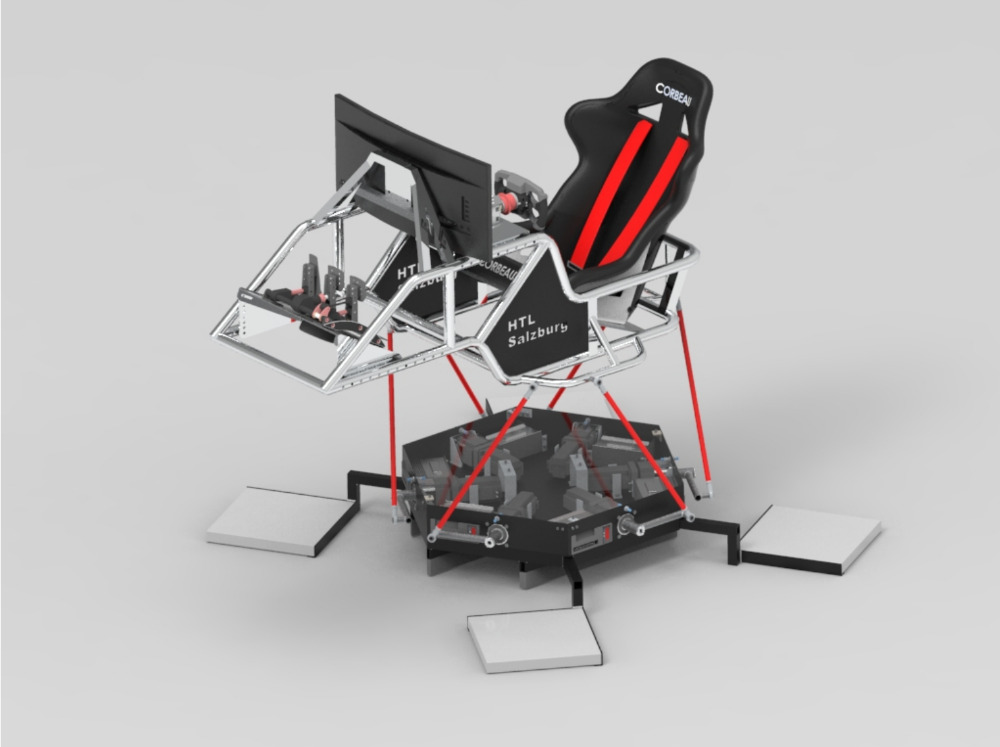
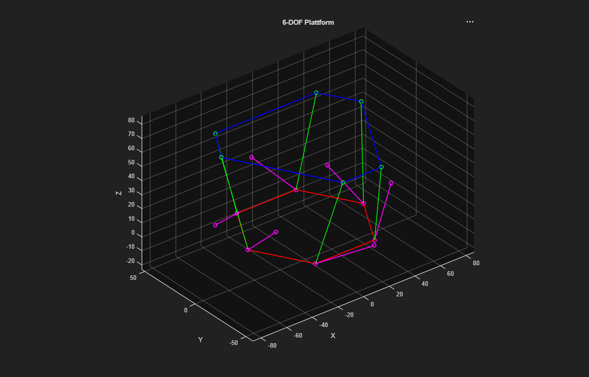

6DoF Dynamic Motion Simulator Rig
In 2nd grade at HTL Salzburg, we took on a non-functional legacy 6DoF Stewart platform motion rig. Through comprehensive electrical troubleshooting, physical cable rewiring, custom fuse box construction, and C++ software development, we fully restored the rig to live operation.
Project Timeline & Milestones
During our 2nd grade at HTL Salzburg, we discovered a non-functional legacy 6DoF motion rig sitting forgotten in the workshop. We initiated a systemic tear-down, tracing every electrical connection, motor controller, and power line to diagnose root cause failures.
We solved severe signal jitter and random cut-outs by completely rewiring the platform. Teammate designed a custom power distribution fuse box while we physically isolated high-current AC/DC motor power cables away from delicate sensor & control telemetry lines.
I engineered the C++ control software connecting telemetry stream data to the motor actuator controllers over serial/CAN bus. To complete the simulator, I presented a professional proposal to department heads, successfully securing €2,000 in triple monitors and a €3,500 high-performance gaming PC.
The restored simulator debuted as the absolute flagship exhibit at HTL Salzburg Open Door Day 2026. Hundreds of visitors drove realistic laps, earning the project coverage in Austria's Kronen Zeitung newspaper and an official HTL Instagram Reel spotlight!
1. Systemic Electrical Repair & Physical Cable Isolation
The primary challenge was resolving severe electromagnetic interference (EMI) and power sags that caused the linear actuators to stall randomly. By completely separating high-voltage power feeds from micro-level signal cables and building a custom fuse box, we restored 100% electrical stability.
2. Custom C++ Control Engine & Kinematics
I developed the modular C++ telemetry reader and control engine. The software receives live telemetry physics data from racing simulators (Assetto Corsa / F1), calculates inverse kinematics for the 6 linear actuators, and outputs synchronized PWM/CAN position targets in real time.
Key Lessons & Impact on Career Focus
- Hands-on mastery of EMC isolation, high-voltage wiring, and power distribution fuse boxes.
- Practical C++ software engineering experience interfacing real-time telemetry to physical actuators.
- This successful restoration solidified my determination to pursue Avionics, Flight Control Systems, and Embedded Hardware.
Press Articles, Instagram Reel & GitHub Source Code
Featured in Kronen Zeitung, official HTL Salzburg Instagram media, and complete C++ source code on GitHub.
Project Media, Code & CAD Assets
Real video of the 6DoF motion rig operating live during racing simulation, CAD 3D assembly models, and MATLAB kinematic simulation plots.

